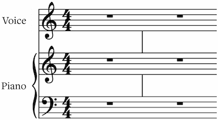

The staff group barline style object
Type: String
This encodes a strategy for how barlines should be connected across staves.
Allowed values:
| Value | Description |
|---|---|
Barlines are not connected across staves. Barlines are only drawn within each individual staff. |
|
| Barlines are only connected within staves that correspond to the same MNX part. For example, piano music with a grand staff (two staves) will generally connect the two staves with a shared barline. This behaves the same as "individual" except for MNX parts that have a "staves" value greater than 1.  |
|
| Barlines are always connected, across all staves, in the Mensurstrich style. In this style, the lines aren't drawn within the five-line staff, but rather only between the staves.  |
|
Barlines are always connected, across all staves. |
Parent objects
This object is used by the following parent objects:
- staff group: "barlineStyle"